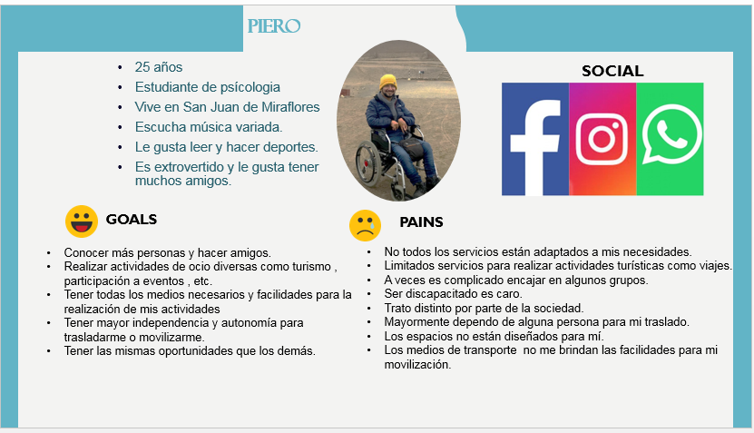
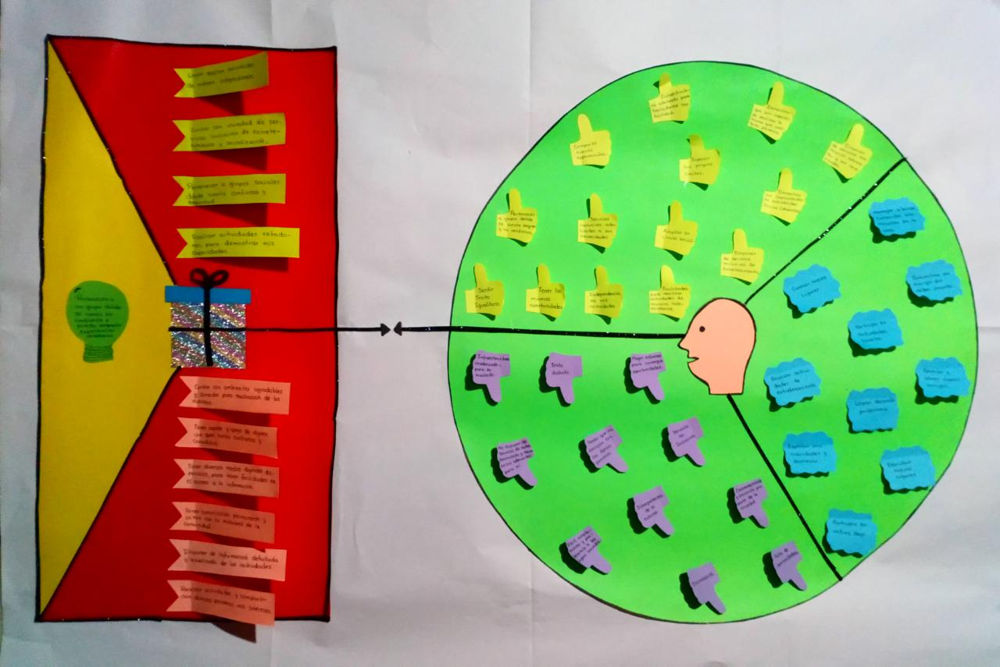
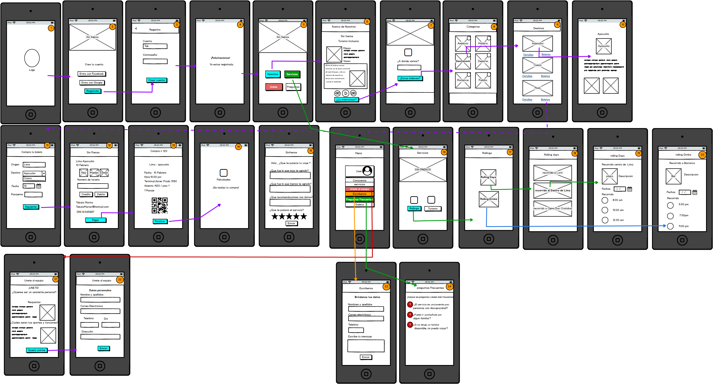
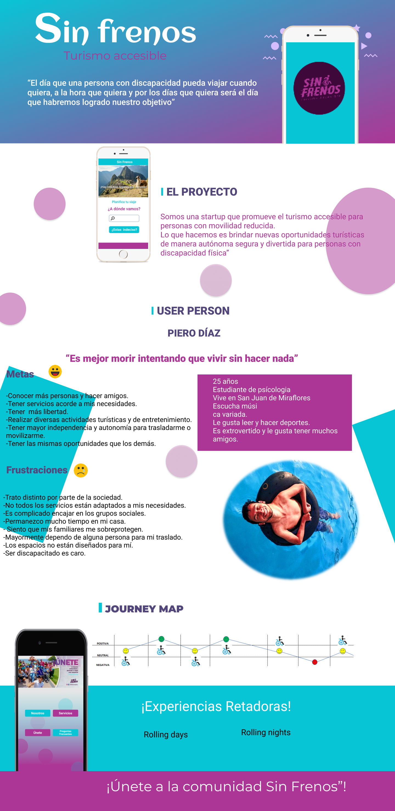

INTERESES
Investigación
En la observación y análisis de los fenómenos de la vida cotidiana podemos detectar problemas diversos y aportar con soluciones creativas e innovadoras.
Psicología y comportamiento humano
A partir del entendimiento de los procesos mentales , podemos entender comportamientos. Lo cúal nos permitirá la mejora de las relaciones sociales, logro de bienestar y desarrollo de nuestra "mejor versión".
Diversidad Mundial
Existe tanta diversidad en el mundo .¿Entonces por qué quedarse solo con una? .Para aprender se necesita de las diferencias , de los que no piensan o viven como nosotros ,entonces podremos descubrir nuevas ideas. ¡Las diferencias nos enriquecen!.
LOGROS
Liderar el tráfico de México
En mi última experiencia laboral logré liderar una cuenta, siendo la encargada del tráfico de los anuncios de México. Además de lograr diversas certificaciones en el manejo de plataformas y temas relacionados a Marketing Digital y afines.
Elaboración de proyecto
Elaboré un proyecto para la mejora del área de Trafficking. Referente a las Discrepancias en los datos del cliente y del adserver , una problemática que aqueja al área. Realicé la investigación, documentación y planteé un flujo para el manejo y gestión de la misma.
SKILLS
Durante mi formación como UX Designer, he desarrollado proyectos con las herramientas Balsamiq Mockups, Marvel, Figma. Además cuento con nociones de HTML5, CSS3, Bootstrap y Git , esto para lograr una mejor comunicación y entendimiento con el equipo.
En mi camino de formación he desarrollado diversas capacidades que me han impulsado siempre a mejorar en cada proyecto, las más destacadas son :Autoaprendizaje, investigación, responsabilidad, comunicación y Compromiso.
PROYECTOS
SIN FRENOS
¿ Cómo podríamos generar comunidad a través de actividades de turismo accesible para las personas con discapacidad en Lima?
Comenzamos con la fase de DESCUBRIMIENTO por lo cual realicé RESEARCH utilizando la técnica de ENTREVISTAS además del BENCHMARK.
Con la información obtenida DEFINIREMOS nuestro USER PERSON llamado PIERO DÍAZ.
Una vez definido nuestro mapa de empatía DEFINIREMOS la PROPUESTA DE VALOR..
La Propuesta de valor obtenida fue la de PERTENECER A UN GRUPO DONDE SE SIENTA EN CONFIANZA Y PUEDA COMPARTIR EXPERIENCIAS RETADORAS.
Ya tengo una propuesta de solución....Entonces vamos a DISEÑAR los wireframes y el flujo a seguir:
Testeé la solución propuesta con algunos usurios. Luego de realizar las VALIDACIONES realicé el PROTOTIPADO. Obteniendo como resultado final...
BANCANET
¿ Cómo podríamos facilitar a los usuarios, la realización de transacciones bancarias a través de medios online?
BANCANET
Proyecto grupal.
Mi Papel: Diseñador UX
Acciones: En trabajo en equipo con mi compañera, realizamos el Research, continuando con la síntesis de los datos e ideación de insights valiosos, culminando con la elaboración del prototipado.
- Elaboré la guía de preguntas para proceder con las entrevistas a los usuarios
- Realización del diagrama de afinidad para ordenar y sintetizar los datos cualitativos obtenidos.
- Realicé el estudio de la competencia con el benchmarking.
- Realización de sketchs y wireframes en papel para el testeo con los usuarios.
- Prototipado en FIGMA para el testeo con los usuarios.
APP EDUCATIVA
¿ Cómo podríamos
mejorar la comunicación entre los docentes y los padres de familia, acerca de las temas educativos de sus hijos en los colegios?
¿Cómo podríamos brindar facilidades para lograr una mayor interacción y comunicación entre los padres de familia y maestros?
¿ Cómo podríamos brindarles mayor información a los padres de familia sobre las actividades escolares de sus hijos?
¿ Cómo podríamos lograr que los maestros compartan información relevante a los padres de familia de manera rápida y fácil?

UNITED SCHOOL
Proyecto individual
Mi Papel: Diseñador UX
Persona Prototipo: “Yesika madre de Diego, Abogada” Madre de familia trabajadora , que se preocupa de la educación de su hijo
Acciones:
- Realicé la investigación cualitativa y cuantitativa
- Realización de la síntesis de los datos e ideación de insights valiosos, mediante el mapa de afinidad.
- Definición de la problemática: HWM(How Might We), WHAT IF.
- Conceptualización; realización de los sketchs y wireframes en papel.
- Prototipado de las vistas en FIGMA.
Conoce más
¿Cómo podríamos brindar facilidades para lograr una mayor interacción y comunicación entre los padres de familia y maestros?
¿ Cómo podríamos brindarles mayor información a los padres de familia sobre las actividades escolares de sus hijos?
¿ Cómo podríamos lograr que los maestros compartan información relevante a los padres de familia de manera rápida y fácil?
UNITED SCHOOL
Proyecto individual
Mi Papel: Diseñador UX
Persona Prototipo: “Yesika madre de Diego, Abogada” Madre de familia trabajadora , que se preocupa de la educación de su hijo
- Realicé la investigación cualitativa y cuantitativa
- Realización de la síntesis de los datos e ideación de insights valiosos, mediante el mapa de afinidad.
- Definición de la problemática: HWM(How Might We), WHAT IF.
- Conceptualización; realización de los sketchs y wireframes en papel.
- Prototipado de las vistas en FIGMA.